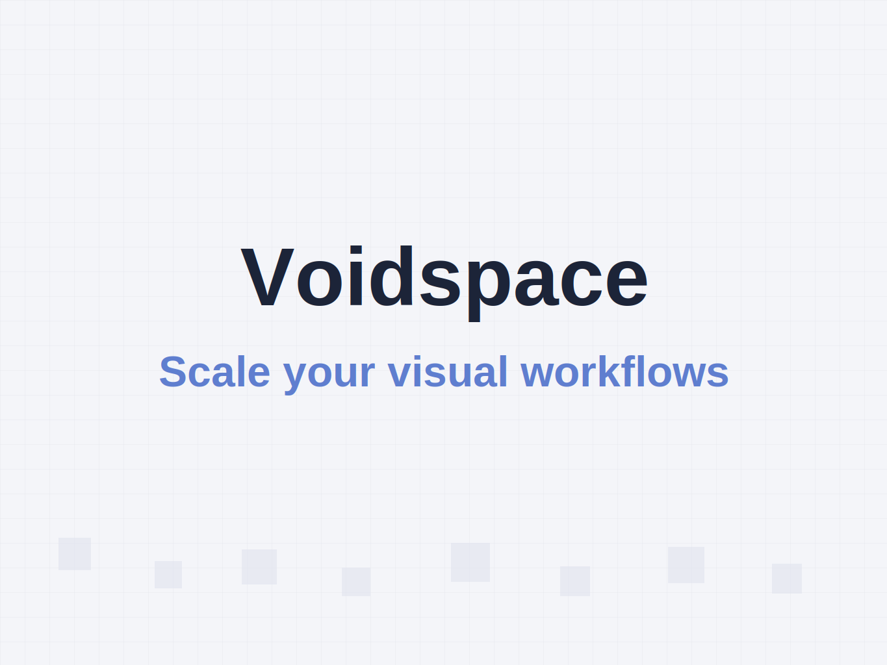

Welcome to my portfolio
AI Engineer • Data Scientist • Product Builder
I turn complex workflows into AI products people actually use.
I design, ship, and iterate production-grade systems across ML, backend APIs, and frontend UX. My work focuses on speed-to-value, measurable outcomes, and clean implementation quality.
Prediction Pipelines
Product Analytics
MLOps Mindset
API Reliability
Outcome Tracking
Execution Snapshot
What I optimize for in every build
Fast delivery, no shortcuts
I move quickly from idea to working product while keeping code quality and maintainability intact.
User value over hype
I build AI features that improve user decisions, not just demos with impressive model outputs.
Cross-stack ownership
From data pipeline and model logic to API and frontend experience, I can own the full loop.
Selected Work
Case-study first project gallery

Featured Case Study
Voidspace Canvas: Building a visual workflow system that scales with complexity
I built a node-based workflow interface focused on production usability: predictable interactions, typed node structures, and real-time UI feedback. The core challenge was keeping the experience clear even when workflows became dense and highly connected.
- Challenge: Complex graph workflows become hard to read and debug.
- Approach: Node architecture + edge behavior rules + responsive canvas interactions.
- Outcome: Faster workflow creation and lower friction when iterating large flows.
Capability Stack
My build system from idea to production
Applied AI Engineering
Prompt workflows, model integration, evaluation loops, and guardrails designed for real usage.
Analytics for decisions
Data pipelines and dashboards that help teams prioritize product decisions with confidence.
Frontend with intent
Responsive interfaces that stay fast, accessible, and clear across desktop and mobile.
Backend and delivery
Reliable APIs, auth flows, scalable data handling, and deployment-ready architecture.
Skills
Core technologies I use to build and ship
AI and Machine Learning
End-to-end ML systems, from experimentation and feature engineering to deployment and iteration.
Data and Analytics
Reliable data workflows and reporting that support faster, evidence-based product decisions.
Full-Stack Development
Building responsive UIs and scalable APIs with clean architecture and production reliability.
Tools and Delivery
Practical tooling for collaboration, shipping quickly, and maintaining quality across releases.
Let's Collaborate
Quick ways to contact me
Open to full-time, freelance, and AI product collaborations.
Timezone: IST
Response: under 24h
Status: available
Note: Some official documents may show a different first name; I use Yuvraj in professional and day-to-day communication.